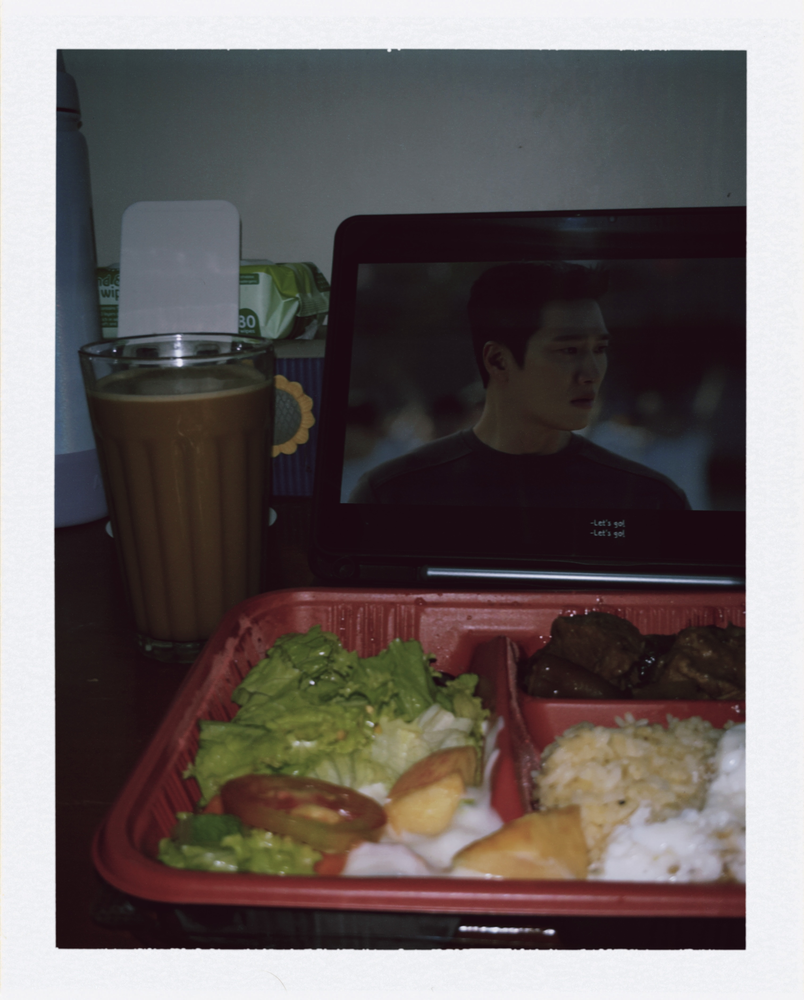

Annyeonghaseyo! Hi! I’m Trixie Ilao Flores, a college student who comes alive at night, survives on snacks and coffee 🍩☕, and sometimes waits until the last minute just to feel the thrill of finishing tasks. I like to get my schoolwork done before the deadline, but I won’t lie, I sometimes procrastinate just a little… or a lot 😅. By day, you’ll find me eating, watching movies or series, and relaxing. By night, I’m all about studying, finishing assignments, and planning for the next day. Basically, I’m here to balance school, fun, a little bit of chaos, and repeat.
There are several essential items that help me stay organized, confident, and prepared for college life:
I enjoy watching Korean and Chinese movies and series, as well as anime from time to time. I love shows with compelling storylines, emotional scenes, and well-developed characters. My favorite genres right now are thriller, mystery, action, and romance/romantic comedy. Recently, I’ve been hooked on the series “Can This Love Be Translated” on Netflix and “Spring Fever” on Prime Video. Watching series is my favorite way to relax after long hours of schoolwork.

Me saying “last episode na” for the 5th time 🫠
Listening to music is a big part of my routine; it keeps me motivated, focused, and in a good mood while studying or working. I also have a sweet tooth 🍫, so I often enjoy desserts or sweet snacks, especially during stressful days; it’s my little comfort. Beyond entertainment, I am interested in self-care, personal growth, and staying confident in both school and life. For me, hobbies aren’t just for fun; they help me recharge, stay balanced, and keep motivated through everything.
I have attended several seminars that helped me grow both as a student and as a person. One of them was the Seminar on Responsible Digital Citizenship, where I learned how to behave properly online, avoid spreading false information, and use social media in a responsible way. It reminded me that what we post and share online has real effects.
I also attended an Anti-Smoking and Substance Advocacy Seminar, which focused on the importance of taking care of our health and avoiding harmful habits. It encouraged students to make better choices and stay away from things that can damage our body and future.
Another seminar I joined was In Sync: Establishing Safe Spaces and Building Social Networks in the Digital Climate. This seminar talked about creating safe and respectful online spaces where people feel comfortable sharing their ideas. It also discussed how to build positive connections with others through technology.
Lastly, I participated in Next-Level Innovation: Youth, Tech, and the Global Game. This seminar highlighted how young people can use technology creatively and responsibly. It inspired me to think bigger, improve my digital skills, and understand how technology connects people around the world.
These seminars helped me become more aware, responsible, and confident in both my academic life and personal life.
Click for something sweet 🍓:
Switch mood 🌸🌹: